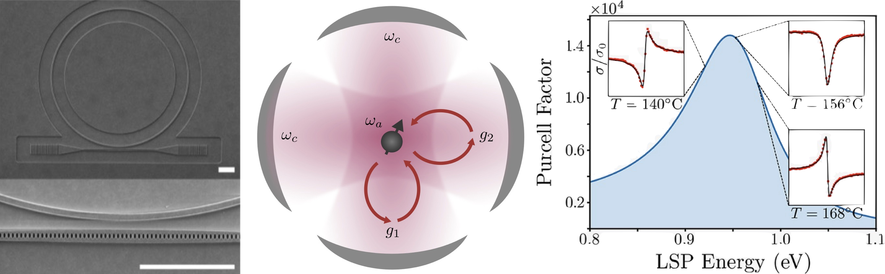

Visual Computing Systems

Coupling between light and matter is extraordinarily weak. Optical resonator cavities provide an opportunity to coax repeated light-matter interactions, thereby enhancing coupling far beyond that of free space. In such settings, coupling can be so strong that it is no longer possible to disentangle the original optical and material degrees of freedom, resulting in non-equilibrium quantum optical states endowed with properties beyond those of their components. Together with experiment we develop theoretical models and simulation tools necessary to explicitly connect nanophotonic cavity + qubit systems with quantum many-body processes and phenomena. Our work not only enables the simulation of quantum many-body physics in nanophotonic devices but also provides opportunities to protect fragile quantum correlations against decoherence.
Related Publications
SIGGRAPH Asia (TOG) 2025
SIGGRAPH Asia 2025
DAC 2025
ISCA 2025
ISCA 2025
ASPLOS 2025
ASPLOS 2025
OOPSLA 2024
TACO 2024
ISCA 2024
ISCA 2024
ASPLOS 2024
SIGGRAPH Emerging Tech. 2023
ICCAD 2023
ISCA 2023
ISCA 2023
SIGGRAPH Asia (TOG) 2022
ISCA 2022
IEEE VR 2022
MICRO 2020
IROS 2020
PACT 2020
FPGA 2020
MICRO 2019
MICRO 2019
ISCA 2019
CAL 2019
ISCA 2018
APSys 2018